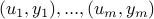
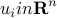
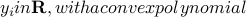

Tractable Fitting with Convex Polynomials via Sum-of-SquaresA. Magnani, S. Lall, and S. Boyd
Proceedings of IEEE Conference on Decision and Control and European Control Conference (CDC-ECC), p1672-1677, December 2005. We consider the problem of fitting given data , where  and f$. A technique to solve this problem using sum of squares polynomials is presented. This technique is extended to enforce convexity of f only on a specified region. Also, an algorithm to fit the convex hull of a set of points with a convex sublevel set of a polynomial is presented. This problem is a natural extension of the problem of finding the minimum volume ellipsoid covering a set. The algorithm, like that for the minimum volume ellipsoid problem, has the property of being invariant to affine coordinate transformations. We generalize this technique to fit arbitrary unions and intersections of polynomial sublevel sets. |